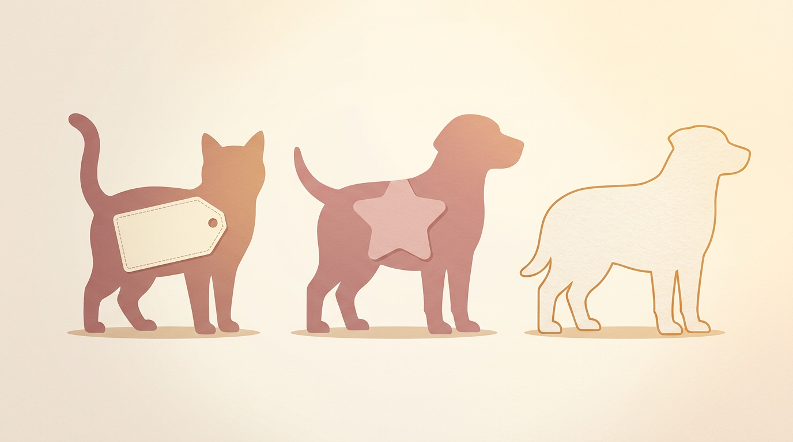
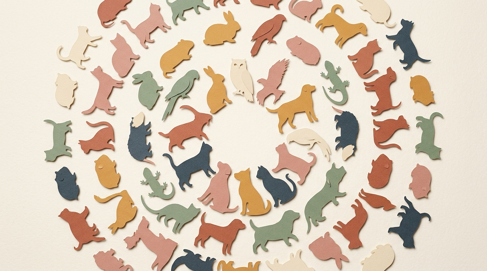
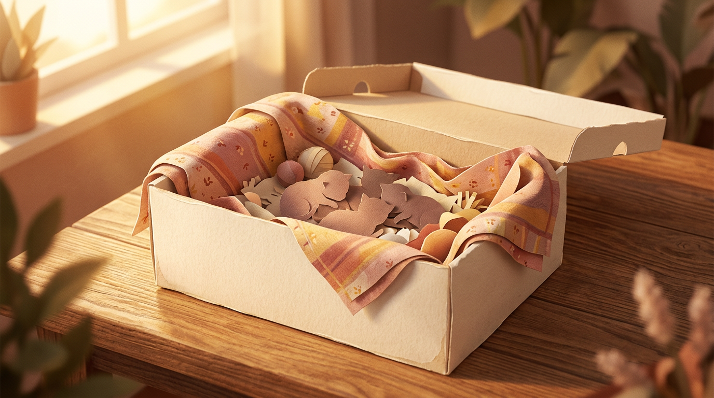

01 — HookThree categories of animal
Of the 29,787 animals that walked, were carried, or were trapped through the doors of Long Beach Animal Care Services between 2017 and 2024, only 7,660 arrived with a name a human had given them. That is 25.7% — barely one in four. Another 9,965 animals (33.5%) start with an asterisk in the data file: a name made up by shelter staff at intake. The remaining 12,162 (40.8%) have no name at all.
The asterisk is not decoration. The TidyTuesday data dictionary tells you exactly what it means: "Animals with * are given by shelter staff." It is a footnote about formatting. It is also, as it turns out, the cleanest single proxy for human attachment in the entire dataset.
Cats and dogs that arrive with an owner-given name go home to their owner 41.3% of the time. Cats and dogs whose names start with an asterisk go home to that owner 0.8% of the time. The asterisk is the difference between a lost dog and a stray.
Where cats and dogs go, by how they arrived
Share of animals reaching each outcome, grouped by how the name field was filled in at intake.

02 — ContextA shelter, not just a cat-and-dog place
Cats and dogs together make up 80.4% of the shelter's intake, but the rest of the building is busy too. Birds account for 7.0% of records, "wild" animals — raccoons, opossums, skunks, hawks — for 4.7%, "other" small mammals and exotic pets for 4.5%, with rabbits, reptiles, guinea pigs, livestock, and even three amphibians filling out the long tail.
Long Beach Animal Care Services is open-admission and municipally contracted: it cannot turn animals away the way a private rescue can. It also serves four neighbouring cities — Cerritos, Signal Hill, Los Alamitos, and Seal Beach — which together send 12.3% of the intake. Long Beach itself is 85.9%. The dataset is, in other words, a regional triage hub: companion animals from five cities, plus the wildlife that those five cities cross paths with.
What walks in the door
Animals taken into LBACS, by species, 2017–2024. Cat and dog dominate; the long tail is real.

03 — The pandemic VTwo quiet years
Annual intake at LBACS fell off a cliff in 2020. From a baseline of 4,826 in 2017, it dropped to 2,421 in 2020 and an even-lower 1,842 in 2021 — 38% of the 2017 number. The same shape shows up in U.S. shelter data nationwide: stray intake fell 28% between 2019 and 2020 because stay-at-home orders meant fewer people walking past loose animals to find them.
By 2024, intake had climbed back to 4,411, essentially the pre-pandemic level. The Long Beach intake curve is a textbook pandemic V: nothing about animal welfare changed, but the world got quieter for two years and so did the shelter.
At the quarterly resolution the shape is sharper still. Intakes ran 1,200 to 1,500 per quarter through most of 2017–2019. Q1 2020 — the first lockdown quarter — collapsed to 452, and intake stayed below 800 a quarter all the way through Q1 2022. The recovery is fully visible by Q2 2024, which clocks 1,587 — the busiest quarter in the dataset, and the reason for the next chart.
Quarterly intake, 2017Q1 – 2024Q4
A V you can see: lockdown collapse in 2020Q1, trough in 2021Q3, kitten-season peak in 2024Q2.
The same story, year by year
Annual intakes; 2021 (1,842) is the lowest year in the dataset.
04 — SeasonalityKitten season is real
If you want to know why animal shelters obsess over foster networks, look at May. In May, LBACS takes in 901 underage kittens — cats arriving in the "under age/weight" intake condition, which mostly means neonates that cannot yet eat without help. In December, that number is 82. May is more than ten times worse than December.
The whole April-to-October stretch averages 600+ underage kittens a month, and overall intake follows the same curve: June peaks at 3,297, December bottoms at 1,633. Kitten season is the single largest seasonal stress on the shelter's medical and foster systems, and it is the operational reason that an open-admission shelter can never rest from May through October.
A curve that looks like rainfall
Monthly totals across all years pooled. The terracotta line is underage kittens; the dusty line is total intake.

05 — The turn2024 was the best year. The save rate says it was just average.
The City's January 2025 press release was right: 2024 was a record. Adoptions hit 1,463 — 3.15× the 2018 baseline of 464, and well past the strategic plan's 1,500-pet placement target when foster and offsite events are counted. Adoptions have grown every year since 2021.
But adoption is not the only outcome that matters, and the live-release rate — the metric that defines a "no-kill" shelter, by Best Friends' 90%-over-twelve-months convention — tells a flatter story. Cats and dogs leaving the shelter alive: 81.3% in 2017, 78.3% in 2018, 86.9% in 2019 (the year the city formally adopted its Compassion Saves model), 92.2% in 2020 (the only year above the no-kill line), then 84.7%, 83.5%, 82.8%, 84.6%. The 2024 number is barely a percentage point above the 2017 number.
The reason is not that fewer animals are being saved. It is that more animals are walking in. Total euthanasia for all species fell from 1,001 in 2017 to 581 in 2019 — a 42% drop in the year Compassion Saves was adopted — and held below 750 every year after. But intake recovered while euthanasia stayed roughly flat, so the percentage stuck. The absolute story is cleaner than the rate. (The data shows this trend coincides with the Compassion Saves policy and the pandemic — it cannot prove either is the cause.)
Cat & dog live-release rate, vs. the 90% no-kill benchmark
Click a year to inspect that year's intake, live exits, and live-release percentage.
Outcome composition by year
Adoptions tripled. Euthanasia dropped a third and stayed there. Rescue/transfer remains the largest single bucket.
06 — SpeciesWhat you are decides where you go
Live-release by species, all years pooled: dogs 92.5%, cats 77.7%, rabbits 81.1%, reptiles 92.2%, guinea pigs 96.5%, birds 68.9%, "wild" 32.4%. The 90% no-kill benchmark, designed for cats and dogs, treats those two species as a combined target. Dogs comfortably clear it on their own. Cats fall about twelve points short.
Live-release rate by species
Dashed line is the 90% no-kill benchmark. Wild animals are euthanised most often because they typically arrive non-survivable; reading their rate alongside cat & dog rates is a category error.
Where you go after the shelter is also species-specific. Dogs predominantly go home — 29.7% return to owner — and 26.6% are adopted; only 6.7% are euthanised. Cats almost never go home (2.2% return-to-owner) but 9.6% leave through TNR pathways: shelter-neuter-return, community cat, trap-neuter-release. Birds usually transfer to a rescue partner. Wild animals are euthanised 62.2% of the time, but they typically arrive injured beyond rehabilitation. Reading those numbers as a single "save rate" papers over five different problems.
Outcome share, species × outcome
Each row sums to 100%. Color shows the dominant pathway for that species.
07 — TriageThe strongest predictor sits at the front door
The strongest single predictor of a cat or dog's outcome is none of the things you'd expect — not species, not year, not owner-named-or-not. It is the intake_condition column: the staff's triage code at the door. Cats and dogs entering as "normal" leave alive 95.3% of the time. "Under age/weight" — the neonatal kitten category — drops to 78.5%. "Injured severe" falls to 30.7%, "ill severe" to 24.9%.
At the other end of the table, "fractious" cats — too unsocialised to be handled — leave alive 89.9% of the time, almost all of them through TNR. "Welfare seizures" — animals removed from cruelty cases — sit at 100% live release on a small sample of 65, consistent with deliberate placement. The shelter's headline number is the average of these subgroups, weighted by who walks in. A shelter that takes more severely-injured animals will have a lower headline rate even if its medical work is identical to a shelter that takes only "normal" intake.
Cat & dog live-release rate by intake condition
Sorted by live-release rate. The dashed 90% line is the no-kill benchmark.
08 — SurrenderWhy people give up pets
The 2,615 owner-surrender records contain the saddest open-text field in the dataset. After excluding the third with no reason recorded, the top four reasons are housing- and money-driven: "owner problem" (405), "move" (231), "landlord" (133), and "cost" (127). Together they account for half of all owner surrenders with a reason — a quiet ledger of California rental policy and pet-deposit math. "New baby," the cliché reason, is one of the smallest categories at 13.
Reasons given for owner surrender
Top four (warm) account for ~51% of surrenders with a reason recorded. "New baby" — the cliché — is 13 cases.
Length of stay is shaped by the same gravitational pulls. Dogs returned to their owners go home in a median of one day. Adoptions take a median of 27 days, the slowest live exit, because they require an adopter to come, choose, sign, pay, and leave with the animal. Rescues and transfers move in 6 days; euthanasia has a 0-day median because much of it is "euthenasia required" day-of-intake for non-survivable wildlife or trauma. Adoption is the slow, miraculous path; everything else is fast.
Median length of stay, by outcome
Dot size = number of cats & dogs reaching each outcome. The slow path is also the live one.
09 — GeographyWhere the animals come from
The geography of intake reads like a map of where Long Beach is dense and where Long Beach is wealthy. The 90805 ZIP — North Long Beach, including the Bixby Knolls borders — alone produces 5,672 intakes, 19% of all rows where a ZIP can be parsed. 90813 (Central Long Beach / Cambodia Town) follows with 3,024, then 90806 (Wrigley) at 2,583 and 90815 (Los Altos) at 2,334.
One artefact deserves a footnote: the densest single map cell in the dataset, with 560 intakes, sits at the shelter's own coordinates inside El Dorado Park. Many free-text crossing addresses default to the building when no precise pickup location was recorded. The real intake map starts after that one bin is removed.
Intake by ZIP, top 12
Marker radius is proportional to intake count. The star is the shelter site itself — flagged here as the address-default artefact.
10 — NamesNames they came in with
The owner-given names follow national pet-naming trends. Luna leads at 84, then Rocky, Max, Coco, Bella, Blue, Buddy, Lola, Charlie, Lucy, Oreo, Shadow, Princess, Bear, Lucky.
Split by species, the lists diverge. The top dog names — Max, Rocky, Coco, Bella, Luna, Blue, Buddy — feel canonical. The top cat names — Luna, Oreo, Leo, Bella, Nala, Daisy, Lucy, Shadow — are softer and more compact. Luna is the only name that tops both.
Top names, dogs ↔ cats
Owner-given names only. Bars to the left are dogs; bars to the right are cats. Luna appears on both sides.
And the reason all of those names matter is that the asterisk pattern is intake-type specific in a way that carries the whole story. Owner-surrender intakes are 76.8% owner-named: someone signed the animal in by name. "Wildlife" intakes are 97.0% blank: nobody names an opossum at intake. "Trap-neuter-return" intakes are 68.5% staff-named: the colony cat pattern, where staff label the same cat over multiple visits. Each intake type has its own naming fingerprint, and the fingerprint maps cleanly onto the outcome the animal will eventually have.
Naming fingerprint by intake type
Each bar is one intake type, shown as 100% stacked by name status. The fingerprint of how an animal arrived is unmistakable.
11 — CloseThe map and the asterisk
The cleanest summary the dataset offers is also the simplest. Owner-named cats and dogs leave alive 93.2% of the time. Staff-named cats and dogs leave alive 93.2% of the time. Blank-named animals — overwhelmingly wildlife — leave alive 61.7% of the time, but "leaving alive" isn't really the goal for a hawk with a broken wing. The 90% benchmark applies to a population of cats and dogs, and within that population, the asterisk does not change a single life.
What it does change is what the shelter has to do to get there. Owner-named animals get reunited; staff-named ones get adopted; both pathways take roughly the same fraction home. The asterisk is the column that tells you which path the animal is on the moment the door opens.
Long Beach hit a record adoption year in 2024, and the city was right to celebrate. The save rate did not move. It will not move much until intake stops growing, or until the system finds a way to convert the long medical tail — the "ill severe" 24.9%, the "injured severe" 30.7% — into a different kind of story. Until then, the shelter's annual report is two numbers, both true: more saved than ever before, and the same percentage as the year before.